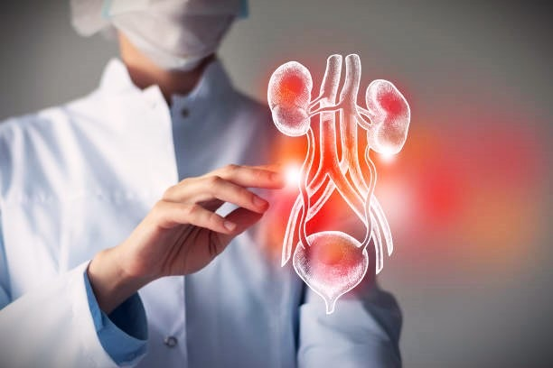

At Himeros Pharma, we approach andrology and sexual wellness through a science-driven, patient-centric framework focused on restoring physiological balance and supporting long-term reproductive health.

Male sexual dysfunction refers to a group of conditions that affect a man's ability to experience satisfactory sexual performance, desire, ejaculation. It is a multifactorial condition influenced by hormonal, vascular, neurological, psychological, metabolic, and lifestyle-related factors.
Several underlying mechanisms contribute to male sexual dysfunction, including impaired nitric oxide signaling, poor blood circulation, endothelial dysfunction, testosterone imbalance, oxidative stress, inflammation, diabetes, obesity, chronic kidney disease, stress, anxiety, and unhealthy lifestyle habits such as smoking, alcohol use, and physical inactivity. These conditions not only impact sexual health but can also affect emotional well-being, confidence, relationships, and overall quality of life.
At Himeros Pharma, sexual wellness is approached as an essential component of overall physical, emotional, and relationship well-being. We focus on supporting healthy sexual function through clinically informed therapies designed for long-term well-being, confidence, and quality of life.
We recognise that sexual wellness concerns are deeply personal and influenced by vascular health, hormonal balance, stress, lifestyle, and emotional factors. Our approach focuses on addressing these interconnected causes responsibly.
Our formulations are developed to support physiological mechanisms involved in sexual health, including nitric oxide pathways, endothelial function, hormonal regulation, energy metabolism, and overall vitality.
We prioritise therapies designed for tolerability, consistency, and sustained support, recognising that sexual wellness management often requires continuous care and lifestyle alignment.
Himeros Pharma is committed to promoting awareness, encouraging open conversations, and supporting sexual wellness with dignity, scientific integrity, and patient trust.
Male infertility refers to a condition in which a man has difficulty contributing to conception due to abnormalities in sperm production, quality, motility, morphology, ejaculation, or reproductive function. It is a multifactorial condition influenced by genetic, hormonal, anatomical, metabolic, environmental, psychological, and lifestyle-related factors.
Several underlying mechanisms contribute to male infertility, including impaired spermatogenesis, hormonal imbalance, oxidative stress, sperm DNA fragmentation, inflammation, varicocele, reproductive tract infections, erectile or ejaculatory dysfunction, obesity, diabetes, chronic systemic diseases, and exposure to environmental toxins. Oxidative stress and the resulting damage to sperm DNA are major contributors because they can impair sperm motility, morphology, fertilization capacity, embryo development, and reproductive outcomes. Lifestyle factors such as smoking, excessive alcohol consumption, poor nutrition, stress, heat exposure, and physical inactivity may further increase oxidative stress and DNA fragmentation, adversely affecting sperm health and reproductive potential. Male infertility can also have significant emotional and psychological effects, influencing confidence, relationships, and overall quality of life.
At Himeros Pharma, reproductive wellness is guided by a commitment to supporting fertility, hormonal health, and reproductive balance in men. We recognise that reproductive challenges are influenced by complex physiological, metabolic, and lifestyle-related factors that require a comprehensive and evidence-based approach. Our therapies are developed to support reproductive health with a focus on long-term outcomes, safety, and holistic well-being.
Our solutions are designed with an understanding of key reproductive mechanisms including hormonal regulation, gamete health, oxidative stress reduction, metabolic balance, and reproductive system support.
We focus on supporting overall reproductive wellness by addressing interconnected factors such as nutrition, stress, endocrine balance, lifestyle habits, and metabolic health.
Our formulations are developed with an emphasis on scientific validation, safety, tolerability, and responsible long-term support for reproductive care journeys.
We believe better reproductive outcomes begin with awareness and timely intervention. Himeros Pharma aims to encourage informed healthcare decisions through ethical practices, education, and patient-focused care.
Erectile dysfunction is the persistent inability to achieve or maintain an erection sufficient for satisfactory sexual performance. It commonly occurs due to impaired nitric oxide signaling, endothelial dysfunction, reduced penile blood flow, hormonal imbalance, diabetes, obesity, cardiovascular disease, stress, anxiety, or neurological disorders. Poor vascular relaxation limits adequate blood filling of the penile tissues, affecting erection quality and rigidity.
Common symptoms include difficulty achieving erections, reduced erection firmness, inability to sustain erections during intercourse, reduced sexual confidence, and decreased libido. ED is often associated with underlying metabolic or cardiovascular health disturbances and may significantly impact emotional well-being and relationship health.
Premature ejaculation is a sexual dysfunction characterized by ejaculation occurring earlier than desired, often with minimal sexual stimulation and reduced voluntary control. It is associated with altered serotonin neurotransmission, penile hypersensitivity, psychological stress, anxiety, hormonal imbalance, and sometimes erectile dysfunction itself. Neurobiological factors affecting ejaculatory reflex pathways can lead to rapid climax and reduced ejaculatory latency time.
Common symptoms include inability to delay ejaculation, distress during sexual activity, reduced sexual satisfaction, performance anxiety, frustration, and relationship difficulties. The condition can become cyclical, where anxiety and fear of poor performance further worsen ejaculatory control over time.
Hypogonadism is a condition characterized by reduced testosterone production due to dysfunction of the testes or impaired hypothalamic-pituitary hormonal signaling. Testosterone deficiency can result from aging, obesity, diabetes, chronic illness, stress, metabolic disorders, medications, or primary testicular dysfunction. Reduced androgen levels affect sexual, reproductive, metabolic, and musculoskeletal functions.
Common symptoms include low libido, fatigue, erectile dysfunction, reduced muscle mass and strength, mood changes, decreased energy, poor concentration, infertility, and reduced sperm production. Long-term hypogonadism may also contribute to metabolic imbalance, reduced bone density, and decline in overall physical and emotional well-being.
At Himeros Pharma, conditions such as erectile dysfunction, premature ejaculation, and hypogonadism are approached as interconnected health concerns influenced by vascular health, hormonal balance, neurological pathways, metabolic function, and psychological well-being. We recognise that these conditions often coexist and collectively impact sexual performance, confidence, fertility potential, emotional health, and overall quality of life. Our focus is on delivering science-driven, patient-centric solutions that support long-term physiological restoration rather than temporary symptomatic relief.
Our therapies are designed to support nitric oxide signaling, endothelial function, neurotransmitter balance, testosterone regulation, energy metabolism, and reproductive health pathways involved in male sexual wellness.
We focus on addressing contributing factors such as oxidative stress, hormonal imbalance, stress, metabolic dysfunction, lifestyle influences, and vascular impairment through comprehensive care strategies.
Recognising the chronic and sensitive nature of these conditions, we prioritise formulations developed for safety, tolerability, patient comfort, and long-term adherence.
Himeros Pharma is committed to encouraging awareness, enabling open conversations around men's health, and delivering responsible, evidence-based therapies rooted in trust, dignity, and scientific integrity.
Hypoactive Sexual Desire Disorder (HSDD) is a condition characterized by a persistent or recurrent deficiency of sexual thoughts, fantasies, interest, or desire for sexual activity that causes personal distress or interpersonal difficulties. It is a multifactorial disorder influenced by hormonal changes, neurotransmitter imbalance, psychological stress, relationship factors, chronic medical conditions, medications, and lifestyle influences. In women, HSDD is often associated with estrogen deficiency, androgen imbalance, menopause, PCOS, postpartum changes, or emotional stress, while in men it may be linked to testosterone deficiency, metabolic disorders, and chronic illness.
Common symptoms include reduced sexual interest, diminished sexual thoughts or fantasies, decreased responsiveness to sexual stimulation, reduced intimacy, loss of motivation for sexual activity, emotional distress, relationship challenges, and a decline in overall quality of life. The condition often affects emotional well-being, self-confidence, and interpersonal relationships, making timely recognition and comprehensive management essential.
At Himeros Pharma, Hypoactive Sexual Desire Disorder is approached as a complex neurohormonal and psychosocial condition that extends beyond sexual desire alone. We recognize that healthy sexual function is influenced by hormonal balance, vascular health, neurotransmitter activity, emotional well-being, and overall vitality. Our focus is on delivering science-driven, patient-centric solutions that support long-term sexual wellness and quality of life.
Our therapies are designed to support the physiological pathways involved in sexual desire, including hormonal regulation, neurotransmitter activity, vascular responsiveness, and energy metabolism.
We focus on factors such as hormonal imbalance, stress, fatigue, metabolic dysfunction, aging-related changes, and emotional well-being that may contribute to reduced sexual desire and arousal.
Recognising the impact of HSDD on confidence, relationships, and emotional health, our approach aims to support overall sexual satisfaction, intimacy, and personal well-being.
Himeros Pharma is committed to promoting awareness, reducing stigma surrounding sexual wellness concerns, and providing responsible, scientifically validated solutions that support healthier and more fulfilling lives.
Product listings will be added here.